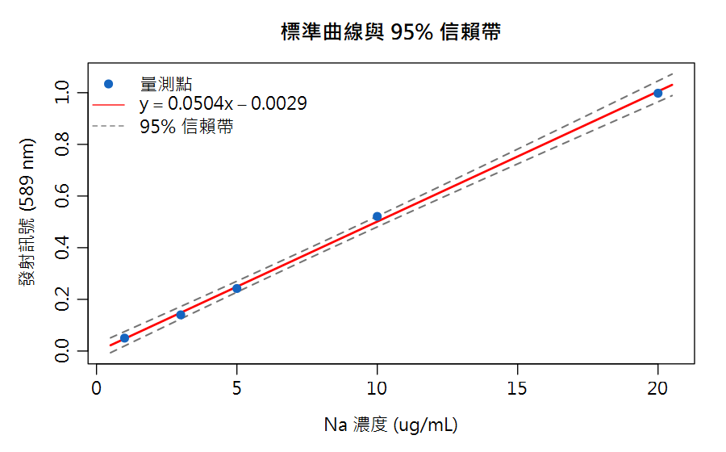
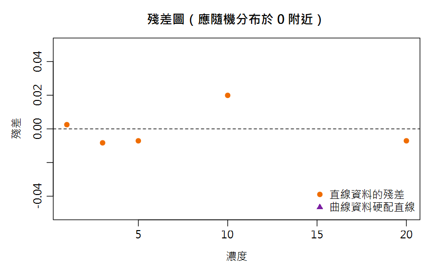

Part 1 數據品管統計（Nielsen's Food Analysis 第4章）／第 4 章
標準曲線與線性迴歸 Curve Fitting: Linear Regression, r & r², Inverse Prediction
儀器只會給你「峰面積」，但法規要的是「濃度」。中間那道換算手續——標準曲線——做錯一步，後面全部白算。
🔑 課前暖身
標準曲線就像「用已知的尺量未知的東西」：先配五個已知濃度畫出一條直線，
再用未知樣品的訊號反推濃度。迴歸就是找出「最貼近所有點的那條線」。
本章新詞先認識：最小平方法＝找最佳直線的數學；r²＝點貼線的程度（愈接近 1 愈好）；殘差＝每個點離線多遠；外插＝超出資料範圍亂延伸（危險！）。
名詞卡住了？回 Ch0 名詞圖鑑 查白話解釋與比喻。
本章新詞先認識：最小平方法＝找最佳直線的數學；r²＝點貼線的程度（愈接近 1 愈好）；殘差＝每個點離線多遠；外插＝超出資料範圍亂延伸（危險！）。
名詞卡住了？回 Ch0 名詞圖鑑 查白話解釋與比喻。
學習目標
- 會用 R 的 lm() 建立標準曲線 y = ax + b
- 會解讀相關係數 r 與判定係數 r²，知道 r ≥ 0.997 的經驗法則
- 會看殘差圖與信賴帶，判斷直線假設是否成立
- 會由未知樣品訊號反推濃度，並知道外插的危險
4.1 標準曲線：儀器分析的靈魂
儀器（HPLC、AA、光譜儀…）量到的是訊號（波峰面積、吸光度）， 我們要的是濃度。做法：配一組已知濃度標準品 → 測訊號 → 擬合直線 → 未知樣品的訊號反推濃度。
📐 慣例
濃度放 x 軸（獨立變數，假設誤差極小）、訊號放 y 軸（依變數，含量測誤差）。
迴歸線「y 對 x」的意義就是建立在這個假設上。
4.2 最小平方迴歸：lm()
斜率 a = Σ(xi − x̄)(yi − ȳ)Σ(xi − x̄)²
截距 b = ȳ − ax̄
Nielsen 式 (4.20)–(4.21)：讓所有點的「垂直距離平方和」最小的直線
Nielsen 章末習題 4（鈉標準曲線 Group A）： 濃度 x = 1, 3, 5, 10, 20 μg/mL，發射值 y = 0.050, 0.140, 0.242, 0.521, 0.998。 迴歸結果 y = 0.0504x − 0.0029，r² = 0.9990（與課本解答一致）。

圖 4-1 鈉標準曲線與 95% 信賴帶：中間最窄、兩端變寬
4.2.1 動手做：R 與 Excel 算出同一條線
同一組數據，用兩種工具各做一次——結果會一模一樣，這就是「統計方法是相通的」最好的證明。
🅁 用 R 語言實作
r² = 0.9990、r = 0.9995（r = \(\sqrt{r^2}\)）。注意 r 才是拿來對照「≥ 0.997」的那個。
在 R 中，主要使用 lm() (Linear Model) 函數來進行線性迴歸。
# 1. 建立數據向量 x <- c(1, 3, 5, 10, 20) y <- c(.050, .140, .242, .521, .998) # 2. 建立線性迴歸模型 (y 對 x) fit <- lm(y ~ x) # 3. 取得方程式參數 coef(fit) # 輸出截距 (-0.0029) 與斜率 (0.0504) summary(fit)$r.squared # 輸出 r² (0.9990) cor(x, y) # 輸出 r (0.9995) # 4. 反推未知濃度 (假設未知樣品訊號為 0.555) # 公式：x = (y - 截距) / 斜率 (0.555 - coef(fit)[1]) / coef(fit)[2] # 算出濃度約 11.07 μg/mL
R Console輸出 output
> coef(fit)
(Intercept) x
-0.002915945 0.050399480
> summary(fit)$r.squared
[1] 0.9990253
> cor(x, y)
[1] 0.9995125
> (0.555 - coef(fit)[1]) / coef(fit)[2]
x
11.06988📊 用 Excel 實作
圖表解法：
1. 選取 A、B 兩欄數據 → 插入「散佈圖」。
2. 對任一點按右鍵選「加上趨勢線」。
3. 勾選「顯示方程式」與「顯示 R 平方值」，圖上就會印出
把濃度輸入 A1:A5、發射值輸入 B1:B5，可以利用內建函數或圖表功能來快速求得直線方程式：
| 結果 | Excel 公式解法 |
|---|---|
| 斜率 a | =SLOPE(B1:B5,A1:A5) → 0.0504 |
| 截距 b | =INTERCEPT(B1:B5,A1:A5) → −0.0029 |
| r² | =RSQ(B1:B5,A1:A5) → 0.9990 |
| r | =CORREL(A1:A5,B1:B5) → 0.9995 |
| 反推濃度 (訊號 0.555) | =(0.555−INTERCEPT(...))/SLOPE(...) → 11.07 |
1. 選取 A、B 兩欄數據 → 插入「散佈圖」。
2. 對任一點按右鍵選「加上趨勢線」。
3. 勾選「顯示方程式」與「顯示 R 平方值」，圖上就會印出
y = 0.0504x − 0.0029 與 R² = 0.9990（等同本頁圖 4-1 的紅線）。✅ 重點比較
兩種工具的斜率、截距、r² 完全相同（0.0504 / −0.0029 / 0.9990），因為底層都是同一個最小平方法公式（Nielsen 式 4.20–4.21）。Excel 適合快速求一條線；R 適合後續接信賴帶、殘差診斷與批次處理（本章後面與 Ch11 會用到）。
4.3 r 與 r²：直線有多「直」？
- 相關係數 r（−1 ~ +1）：r=+1 完美正相關。分析化學經驗法則：r ≥ 0.997 才算理想標準曲線（生物數據除外）
- 判定係數 r²：y 變異中能被 x 線性解釋的比例。r²=0.9990 → 0.10% 的變異來自隨機因素（Nielsen 4.4.2）
⚠️ r 高不等於直線！
r 只衡量「假設是直線時 fit 得多好」。彎曲的數據硬配直線，r 也可能很高。
永遠先畫圖、看殘差——這是 Nielsen 特別強調的第一步。

圖 4-2 殘差圖：橘圓＝直線資料（隨機散布，好）；紫三角＝曲線資料硬配直線（呈現彎曲趨勢，壞）
4.4 反推未知濃度與外插危機
xpred = yobs − ba
Nielsen 式 (4.23)：咖啡因例子 (4000 − 90.727)/89.994 = 43.44 ppm
Nielsen 的咖啡因 HPLC 曲線：y = 89.994x + 90.727（r²=0.9989），未知咖啡樣品波峰面積 4000 → 43.44 ppm 咖啡因。鈉曲線的未知樣品 y=0.555 → (0.555+0.0029)/0.0504 = 11.1 μg/mL。
🚫 不要外插（Nielsen Fig 4.8）
高濃度端可能進入飽和平台，低濃度端可能偏離原點。
未知樣品濃度必須落在標準曲線線性範圍內，最好在中段（信賴帶最窄處）。
太濃就稀釋，太淡就濃縮或增加進樣量。
x <- c(1, 3, 5, 10, 20) # Na 濃度 ug/mL
y <- c(.050, .140, .242, .521, .998) # 發射值
fit <- lm(y ~ x) # 線性迴歸
coef(fit) #> (Intercept) -0.00292 | x 0.05040
summary(fit)$r.squared #> 0.9990
cor(x, y) #> 0.9995
# 反推未知樣品 (y_obs = 0.555)
y_obs <- 0.555
(y_obs - coef(fit)[1]) / coef(fit)[2] #> 11.1 ug/mL
# 殘差檢查
residuals(fit)
#> 1 2 3 4 5
#> 0.0025 -0.0083 -0.0071 0.0199 -0.0071 (隨機散布，OK)
# 95% 信賴帶畫法
nx <- seq(1, 20, length.out = 100)
ci <- predict(fit, data.frame(x = nx), interval = "confidence")
matplot(nx, ci[, c("lwr","upr")], type="l", lty=2, col="grey40")
abline(fit, col="red"); points(x, y, pch=19)
R Console輸出 output
(Intercept) x
-0.002915945 0.050399480
[1] 0.9990253
[1] 0.9995125
(Intercept)
11.06988
1 2 3 4 5
0.002516464 -0.008282496 -0.007081456 0.019921144 -0.007073657🔗 通往 Part 2
「反推濃度」本身就有不確定度（斜率、截距、殘差都會傳播進去）。
QUAM 附錄 E.4 給了完整公式，我們在第 11 章綜合案例會用 R 實作它。
📊 Excel 也會算：標準曲線迴歸
📊 沒有 R 也能動手
已知濃度放
畫圖：選 A、B 兩欄 → 插入散佈圖 → 對點按右鍵「加上趨勢線」→ 勾選「顯示公式與 R²」。一次得到圖、方程式、r²。
A1:A5（x）、儀器訊號放 B1:B5（y）。Excel 的 SLOPE/INTERCEPT 就是最小平方法，與 R 的 lm() 一致。| 任務 | Excel 公式 | 說明 |
|---|---|---|
| 斜率 a | =SLOPE(B1:B5,A1:A5) | 靈敏度 |
| 截距 b | =INTERCEPT(B1:B5,A1:A5) | 空白背景 |
| r² | =RSQ(B1:B5,A1:A5) | 貼線程度 |
| 反推未知濃度 | =(未知訊號−b)/a | x=(y−b)/a |
| 殘差 | =B1−(截距+斜率*A1) | 逐點下拉 |